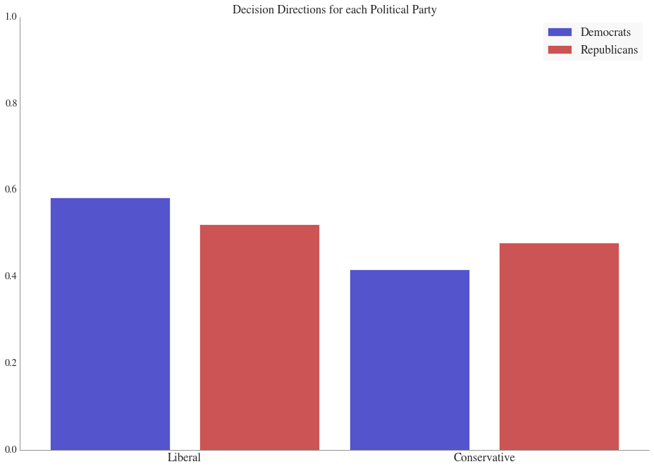
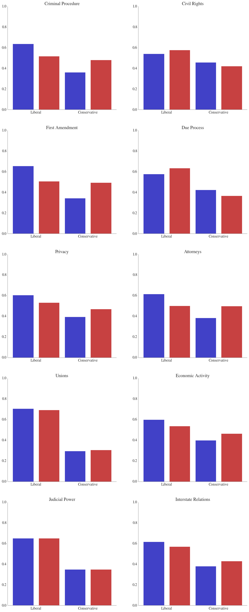
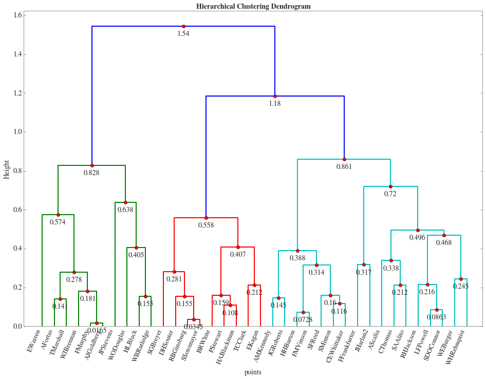

Is the Supreme Court Politically Biased?
Each Justice of the Supreme Court is appointed by a President of the United States. Even if this choice is supposed to be objective, one may think that the justice was choosen because of his ideological closenness to the President. We try to see if this bias exists and has an impact on the Supreme Court decisions.
Descriptive Analysis
On each case raised to the Supreme Court, each Justice casts a vote and the final decision is the choice of the majority. These votes can be categorized ideologically as either conservative or liberal.
Here is the barplot of the percentages of liberal and conservative decisions taken by justices appointed by Democrat/Republican Presidents:

This graph suggests a small ideological correlation between the party of the the appointing President and the ideological direction of a Justice’s votes. We can observe as expected that Democrat-appointed Justices vote 59% of the time Liberal, while it is 52% for the Republican appointed ones.
Each case in the Spaeth dataset is associated with an Issue Area that describes the area of the law that the case. If we draw the same graph as above for each of those areas:

We can lear from the above graph that ideological tendencies are easier to identify in specific areas of law:
- First Amendment, Unions and Criminal Procedures for Democrat-appointed justices
- Unions, Judicial Power and Attorneys for Republican-appointed justices
Our next step is to find groups among justices and see if those groups separate justices that were appointed by Presidents from different parties.
Discovering Groups among Justices
We want to explore if there are other identifiable groupings of Justices in the court. We use k-means clustering and hierarchical clustering to determine these clusters. We are testing if Justices cluster with respect to these characteristics:
- Liberal Ratio: Ratio of Liberal (Vs. Conservative) decisions for each justice,
- Opinion Written Ratio: The ratio of cases where the given justice was the author of an opinion. Each justice can choose to write an opinion or choose to add their name to one that another justice authors.
- Ratio of Dissent with Majority: The ratio of cases where the given justice disagreed with the majority vote.

From the above, we can see three large clusters. The red cluster is mostly modern liberal justices; the cyan cluster is mostly modern conservative justice; and the green cluster has mostly justices in less recent courts (before the Rehnquist court).
Summary
Using features of the data, we can see that justices group together based on other features than the party of the appointing President, even though this feature largely determines a number of our clusters.